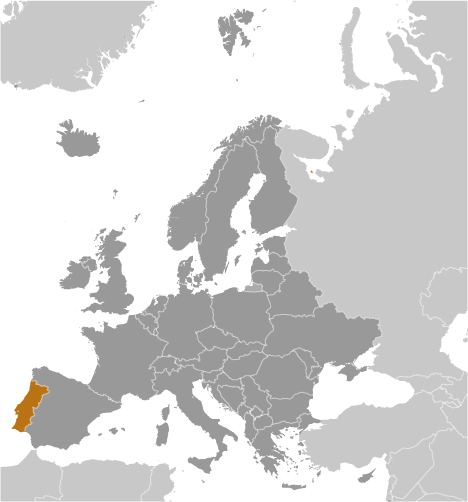
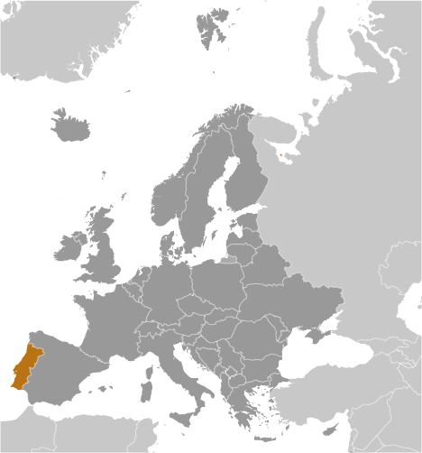

-
Introduction :: Portugal
-
Background:
Following its heyday as a global maritime power during the 15th and 16th centuries, Portugal lost much of its wealth and status with the destruction of Lisbon in a 1755 earthquake, occupation during the Napoleonic Wars, and the independence of Brazil, its wealthiest colony, in 1822. A 1910 revolution deposed the monarchy, and for most of the next six decades, repressive governments ran the country. In 1974, a left-wing military coup installed broad democratic reforms. The following year, Portugal granted independence to all of its African colonies. Portugal is a founding member of NATO and entered the EC (now the EU) in 1986.
PORTUGAL SUMMARY: PDF -
Geography :: Portugal
-
Location:Southwestern Europe, bordering the North Atlantic Ocean, west of SpainGeographic coordinates:39 30 N, 8 00 WMap references:EuropeArea:total: 92,090 sq kmland: 91,470 sq kmwater: 620 sq km
note: includes Azores and Madeira Islands
country comparison to the world: 112Area - comparative:slightly smaller than VirginiaLand boundaries:total: 1,224 kmborder countries (1): Spain 1224 kmCoastline:1,793 kmMaritime claims:territorial sea: 12 nmexclusive economic zone: 200 nmcontiguous zone: 24 nmcontinental shelf: 200-m depth or to the depth of exploitationClimate:maritime temperate; cool and rainy in north, warmer and drier in southTerrain:the west-flowing Tagus River divides the country: the north is mountainous toward the interior, while the south is characterized by rolling plainsElevation:mean elevation: 372 melevation extremes: 0 m lowest point: Atlantic Ocean2351 highest point: Ponta do Pico (Pico or Pico Alto) on Ilha do Pico in the AzoresNatural resources:fish, forests (cork), iron ore, copper, zinc, tin, tungsten, silver, gold, uranium, marble, clay, gypsum, salt, arable land, hydropowerLand use:agricultural land: 39.7% (2011 est.)arable land: 11.9% (2011 est.) / permanent crops: 7.8% (2011 est.) / permanent pasture: 20% (2011 est.)forest: 37.8% (2011 est.)other: 22.5% (2011 est.)Irrigated land:5,400 sq km (2012)Population distribution:concentrations are primarily along or near the Atlantic coast; both Lisbon and the second largest city, Porto, are coastal citiesNatural hazards:Azores subject to severe earthquakes
volcanism: limited volcanic activity in the Azores Islands; Fayal or Faial (1,043 m) last erupted in 1958; most volcanoes have not erupted in centuries; historically active volcanoes include Agua de Pau, Furnas, Pico, Picos Volcanic System, San Jorge, Sete Cidades, and Terceira
Environment - current issues:soil erosion; air pollution caused by industrial and vehicle emissions; water pollution, especially in urban centers and coastal areasEnvironment - international agreements:party to: Air Pollution, Biodiversity, Climate Change, Climate Change-Kyoto Protocol, Desertification, Endangered Species, Hazardous Wastes, Law of the Sea, Marine Dumping, Marine Life Conservation, Ozone Layer Protection, Ship Pollution, Tropical Timber 83, Tropical Timber 94, Wetlands, Whalingsigned, but not ratified: Air Pollution-Persistent Organic Pollutants, Air Pollution-Volatile Organic Compounds, Environmental ModificationGeography - note:Azores and Madeira Islands occupy strategic locations along western sea approaches to Strait of Gibraltar -
People and Society :: Portugal
-
Population:10,355,493 (July 2018 est.)country comparison to the world: 87Nationality:noun: Portuguese (singular and plural)adjective: PortugueseEthnic groups:white homogeneous Mediterranean population; citizens of black African descent who immigrated to mainland during decolonization number less than 100,000; since 1990, Eastern Europeans have migrated to PortugalLanguages:Portuguese (official), Mirandese (official, but locally used)Religions:Roman Catholic 81%, other Christian 3.3%, other (includes Jewish, Muslim, other) 0.6%, none 6.8%, unspecified 8.3% (2011 est.)
note: represents population 15 years of age and older
Age structure:0-14 years: 14.01% (male 743,277 /female 707,437)15-24 years: 10.89% (male 580,709 /female 546,908)25-54 years: 42.04% (male 2,143,735 /female 2,209,736)55-64 years: 12.8% (male 605,113 /female 720,192)65 years and over: 20.26% (male 838,606 /female 1,259,780) (2018 est.)population pyramid: The World Factbook Field Image ModalEurope :: Portugal Print
The World Factbook Field Image ModalEurope :: Portugal Print Image DescriptionThis is the population pyramid for Portugal. A population pyramid illustrates the age and sex structure of a country's population and may provide insights about political and social stability, as well as economic development. The population is distributed along the horizontal axis, with males shown on the left and females on the right. The male and female populations are broken down into 5-year age groups represented as horizontal bars along the vertical axis, with the youngest age groups at the bottom and the oldest at the top. The shape of the population pyramid gradually evolves over time based on fertility, mortality, and international migration trends.
Image DescriptionThis is the population pyramid for Portugal. A population pyramid illustrates the age and sex structure of a country's population and may provide insights about political and social stability, as well as economic development. The population is distributed along the horizontal axis, with males shown on the left and females on the right. The male and female populations are broken down into 5-year age groups represented as horizontal bars along the vertical axis, with the youngest age groups at the bottom and the oldest at the top. The shape of the population pyramid gradually evolves over time based on fertility, mortality, and international migration trends.
For additional information, please see the entry for Population pyramid on the Definitions and Notes page under the References tab.Dependency ratios:total dependency ratio: 53.4 (2015 est.)youth dependency ratio: 21.6 (2015 est.)elderly dependency ratio: 31.8 (2015 est.)potential support ratio: 3.1 (2015 est.)Median age:total: 43.7 yearsmale: 41.8 yearsfemale: 45.6 years (2018 est.)country comparison to the world: 17Population growth rate:-0.27% (2018 est.)country comparison to the world: 216Birth rate:8.2 births/1,000 population (2018 est.)country comparison to the world: 220Death rate:10.6 deaths/1,000 population (2018 est.)country comparison to the world: 25Net migration rate:2.5 migrant(s)/1,000 population (2017 est.)country comparison to the world: 37Population distribution:concentrations are primarily along or near the Atlantic coast; both Lisbon and the second largest city, Porto, are coastal citiesUrbanization:urban population: 65.2% of total population (2018)rate of urbanization: 0.47% annual rate of change (2015-20 est.)Major urban areas - population:2.927 million LISBON (capital), 1.307 million Porto (2018)Sex ratio:at birth: 1.07 male(s)/female (2017 est.)0-14 years: 1.09 male(s)/female (2017 est.)15-24 years: 1.13 male(s)/female (2017 est.)25-54 years: 1.03 male(s)/female (2017 est.)55-64 years: 0.88 male(s)/female (2017 est.)65 years and over: 0.69 male(s)/female (2017 est.)total population: 0.96 male(s)/female (2017 est.)Mother's mean age at first birth:30.2 years (2015 est.)Maternal mortality rate:10 deaths/100,000 live births (2015 est.)country comparison to the world: 149Infant mortality rate:total: 2.6 deaths/1,000 live births (2018 est.)male: 3 deaths/1,000 live births (2018 est.)female: 2.2 deaths/1,000 live births (2018 est.)country comparison to the world: 215Life expectancy at birth:total population: 80.9 years (2018 est.)male: 77.7 years (2018 est.)female: 84.2 years (2018 est.)country comparison to the world: 38Total fertility rate:1.39 children born/woman (2018 est.)country comparison to the world: 213Contraceptive prevalence rate:73.9% (2014)Health expenditures:9.5% of GDP (2014)country comparison to the world: 31Physicians density:4.43 physicians/1,000 population (2014)Hospital bed density:3.4 beds/1,000 population (2013)Drinking water source:improved: urban: 100% of populationrural: 100% of populationtotal: 100% of populationunimproved: urban: 0% of populationrural: 0% of populationtotal: 0% of population (2015 est.)Sanitation facility access:improved: urban: 99.6% of population (2015 est.)rural: 99.8% of population (2015 est.)total: 99.7% of population (2015 est.)unimproved: urban: 0.4% of population (2015 est.)rural: 0.2% of population (2015 est.)total: 0.3% of population (2015 est.)HIV/AIDS - adult prevalence rate:0.6% (2017 est.)country comparison to the world: 61HIV/AIDS - people living with HIV/AIDS:40,000 (2017 est.)country comparison to the world: 66HIV/AIDS - deaths:<500 (2017 est.)Obesity - adult prevalence rate:20.8% (2016)country comparison to the world: 95Education expenditures:5.1% of GDP (2014)country comparison to the world: 70Literacy:definition: age 15 and over can read and write (2015 est.)total population: 95.7% (2015 est.)male: 97.1% (2015 est.)female: 94.4% (2015 est.)School life expectancy (primary to tertiary education):total: 17 years (2014)male: 17 years (2014)female: 17 years (2014)Unemployment, youth ages 15-24:total: 23.9% (2017 est.)male: 22.4% (2017 est.)female: 25.5% (2017 est.)country comparison to the world: 51 -
Government :: Portugal
-
Country name:conventional long form: Portuguese Republicconventional short form: Portugallocal long form: Republica Portuguesalocal short form: Portugaletymology: name derives from the Roman designation "Portus Cale" meaning "Port of Cale"; Cale was an ancient Celtic town and port in present-day northern PortugalGovernment type:semi-presidential republicCapital:name: Lisbongeographic coordinates: 38 43 N, 9 08 Wtime difference: UTC 0 (5 hours ahead of Washington, DC, during Standard Time)daylight saving time: +1hr, begins last Sunday in March; ends last Sunday in October
note: Portugal has two time zones, including the Azores (UTC-1)
Administrative divisions:18 districts (distritos, singular - distrito) and 2 autonomous regions* (regioes autonomas, singular - regiao autonoma); Aveiro, Acores (Azores)*, Beja, Braga, Braganca, Castelo Branco, Coimbra, Evora, Faro, Guarda, Leiria, Lisboa (Lisbon), Madeira*, Portalegre, Porto, Santarem, Setubal, Viana do Castelo, Vila Real, ViseuIndependence:1143 (Kingdom of Portugal recognized); 1 December 1640 (independence reestablished following 60-years of Spanish rule); 5 October 1910 (republic proclaimed)National holiday:Portugal Day (Dia de Portugal), 10 June (1580); note - also called Camoes Day, the day that revered national poet Luis DE CAMOES (1524-80) diedConstitution:history: several previous; latest adopted 2 April 1976, effective 25 April 1976 (2016)amendments: proposed by the Assembly of the Republic; adoption requires two-thirds majority vote of Assembly members; amended several times, last in 2005 (2016)Legal system:civil law system; Constitutional Court review of legislative actsInternational law organization participation:accepts compulsory ICJ jurisdiction with reservations; accepts ICCt jurisdictionCitizenship:citizenship by birth: nocitizenship by descent only: at least one parent must be a citizen of Portugaldual citizenship recognized: yesresidency requirement for naturalization: 10 years; 6 years if from a Portuguese-speaking countrySuffrage:18 years of age; universalJudicial branch:highest courts: Supreme Court or Supremo Tribunal de Justica (consists of 12 justices); Constitutional Court or Tribunal Constitucional (consists of 13 judges)judge selection and term of office: Supreme Court justices nominated by the president and appointed by the Assembly of the Republic; judges can serve for life; Constitutional Court judges - 10 elected by the Assembly and 3 elected by the other Constitutional Court judges; judges elected for 6-year nonrenewable termssubordinate courts: Supreme Administrative Court (Supremo Tribunal Administrativo); Audit Court (Tribunal de Contas); appellate, district, and municipal courtsExecutive branch:chief of state: President Marcelo REBELO DE SOUSA (since 9 March 2016)head of government: Prime Minister Antonio Luis Santos da COSTA (since 24 November 2015)cabinet: Council of Ministers appointed by the president on the recommendation of the prime ministerelections/appointments: president directly elected by absolute majority popular vote in 2 rounds if needed for a 5-year term (eligible for a second term); election last held on 24 January 2016 (next to be held in January 2021); following legislative elections the leader of the majority party or majority coalition is usually appointed prime minister by the presidentelection results: Marcelo REBELO DE SOUSA elected president in the first round; percent of vote - Marcelo REBELO DE SOUSA (PSD) 52%, Antonio Sampaio da NOVOA (independent) 22.9%, Marisa MATIAS (BE) 10.1%, Maria de BELEM (independent) 4.2%, other 10.8%note: there is also a Council of State that acts as a consultative body to the president
Legislative branch:description: unicameral Assembly of the Republic or Assembleia da Republica (230 seats; 226 members directly elected in multi-seat constituencies by proportional representation vote and 4 members - 2 each in 2 constituencies representing Portuguese living abroad - directly elected by proportional representation vote; members serve 4-year terms)elections: last held on 4 October 2015 (next to be held by October 2019)election results: percent of vote by party - PaF 36.9%, PS 32.3%, B.E. 10.2%, CDU 8.3%, PPD/PSD (Azores and Madeira) 1.5%, PAN 1.4%, other 9.4%; seats by party - PaF 102, PS 86, B.E. 19, CDU 17, PPD/PSD (Azores and Madeira) 5, PAN 1; composition - men 158, women 72, percent of women 31.3%Political parties and leaders:Democratic and Social Center/Popular Party (Partido do Centro Democratico Social-Partido Popular) or CDS-PP [Assuncao CRISTAS]
Ecologist Party "The Greens" or "Os Verdes" (Partido Ecologista-Os Verdes) or PEV [Heloisa APOLONIA]
People-Animals-Nature Party (Pessoas-Animais-Natureza) or PAN [Andre SILVA]
Portuguese Communist Party (Partido Comunista Portugues) or PCP [Jeronimo DE SOUSA]
Social Democratic Party (Partido Social Democrata) or PSD (original name Partido Popular Democratico) or PPD [Rui RIO]
Socialist Party (Partido Socialista) or PS [Antonio COSTA]
The Left Bloc (Bloco de Esquerda) or BE or O Bloco [Catarina MARTINS]
Unitary Democratic Coalition (Coligacao Democratica Unitaria) or CDU [Jeronimo DE SOUSA] (includes PCP and PEV)International organization participation:ADB (nonregional member), AfDB (nonregional member), Australia Group, BIS, CD, CE, CERN, CPLP, EAPC, EBRD, ECB, EIB, EMU, ESA, EU, FAO, FATF, IADB, IAEA, IBRD, ICAO, ICC (national committees), ICCt, ICRM, IDA, IEA, IFAD, IFC, IFRCS, IHO, ILO, IMF, IMO, IMSO, Interpol, IOC, IOM, IPU, ISO, ITSO, ITU, ITUC (NGOs), LAIA (observer), MIGA, MINUSMA, NATO, NEA, NSG, OAS (observer), OECD, OPCW, OSCE, Pacific Alliance (observer), Paris Club (associate), PCA, Schengen Convention, SELEC (observer), UN, UNCTAD, UNESCO, UNHCR, UNIDO, Union Latina, UNWTO, UPU, WCO, WFTU (NGOs), WHO, WIPO, WMO, WTO, ZCDiplomatic representation in the US:chief of mission: Ambassador Domingos Teixeira de Abreu FEZAS VITAL (since 28 January 2016)chancery: 2012 Massachusetts Avenue NW, Washington, DC 20036telephone: [1] (202) 332-3007FAX: [1] (202) 223-3926consulate(s) general: Boston, New York, San Franciscoconsulate(s): New Bedford (MA), Newark (NJ), Providence (RI)Diplomatic representation from the US:chief of mission: Ambassador George E. GLASS (since 25 August 2017)embassy: Avenida das Forcas Armadas, 1600-081 Lisbonmailing address: Apartado 43033, 1601-301 Lisboa; PSC 83, APO AE 09726telephone: [351] (21) 727-3300FAX: [351] (21) 726-9109consulate(s): Ponta Delgada (Azores)Flag description:two vertical bands of green (hoist side, two-fifths) and red (three-fifths) with the national coat of arms (armillary sphere and Portuguese shield) centered on the dividing line; explanations for the color meanings are ambiguous, but a popular interpretation has green symbolizing hope and red the blood of those defending the nationNational symbol(s):armillary sphere (a spherical astrolabe modeling objects in the sky and representing the Republic); national colors: red, greenNational anthem:name: "A Portugesa" (The Song of the Portuguese)lyrics/music: Henrique LOPES DE MENDOCA/Alfredo KEILnote: adopted 1910; "A Portuguesa" was originally written to protest the Portuguese monarchy's acquiescence to the 1890 British ultimatum forcing Portugal to give up areas of Africa; the lyrics refer to the "insult" that resulted from the event
-
Economy :: Portugal
-
Economy - overview:
Portugal has become a diversified and increasingly service-based economy since joining the European Community - the EU's predecessor - in 1986. Over the following two decades, successive governments privatized many state-controlled firms and liberalized key areas of the economy, including the financial and telecommunications sectors. The country joined the Economic and Monetary Union in 1999 and began circulating the euro on 1 January 2002 along with 11 other EU members.
The economy grew by more than the EU average for much of the 1990s, but the rate of growth slowed in 2001-08. After the global financial crisis in 2008, Portugal’s economy contracted in 2009 and fell into recession from 2011 to 2013, as the government implemented spending cuts and tax increases to comply with conditions of an EU-IMF financial rescue package, signed in May 2011. Portugal successfully exited its EU-IMF program in May 2014, and its economic recovery gained traction in 2015 because of strong exports and a rebound in private consumption. GDP growth accelerated in 2016, and probably reached 2.5 % in 2017. Unemployment remained high, at 9.7% in 2017, but has improved steadily since peaking at 18% in 2013.
The center-left minority Socialist government has unwound some unpopular austerity measures while managing to remain within most EU fiscal targets. The budget deficit fell from 11.2% of GDP in 2010 to 1.8% in 2017, the country’s lowest since democracy was restored in 1974, and surpassing the EU and IMF projections of 3%. Portugal exited the EU’s excessive deficit procedure in mid-2017.
GDP (purchasing power parity):$314.1 billion (2017 est.)$305.9 billion (2016 est.)$301 billion (2015 est.)note: data are in 2017 dollars
country comparison to the world: 55GDP (official exchange rate):$218 billion (2017 est.) (2017 est.)GDP - real growth rate:2.7% (2017 est.)1.6% (2016 est.)1.8% (2015 est.)country comparison to the world: 126GDP - per capita (PPP):$30,500 (2017 est.)$29,600 (2016 est.)$29,100 (2015 est.)note: data are in 2017 dollars
country comparison to the world: 67Gross national saving:16.8% of GDP (2017 est.)16.1% of GDP (2016 est.)15.9% of GDP (2015 est.)country comparison to the world: 124GDP - composition, by end use:household consumption: 65.1% (2017 est.)government consumption: 17.6% (2017 est.)investment in fixed capital: 16.2% (2017 est.)investment in inventories: 0.1% (2017 est.)exports of goods and services: 43.1% (2017 est.)imports of goods and services: -42.1% (2017 est.)GDP - composition, by sector of origin:agriculture: 2.2% (2017 est.)industry: 22.1% (2017 est.)services: 75.7% (2017 est.)Agriculture - products:grain, potatoes, tomatoes, olives, grapes; sheep, cattle, goats, pigs, poultry, dairy products; fishIndustries:textiles, clothing, footwear, wood and cork, paper and pulp, chemicals, fuels and lubricants, automobiles and auto parts, base metals, minerals, porcelain and ceramics, glassware, technology, telecommunications; dairy products, wine, other foodstuffs; ship construction and refurbishment; tourism, plastics, financial services, opticsIndustrial production growth rate:3.5% (2017 est.)country comparison to the world: 89Labor force:5.233 million (2017 est.)country comparison to the world: 80Labor force - by occupation:agriculture: 8.6%industry: 23.9%services: 67.5% (2014 est.)Unemployment rate:8.9% (2017 est.)11.1% (2016 est.)country comparison to the world: 127Population below poverty line:19% (2015 est.)Distribution of family income - Gini index:33.9 (2015 est.)34 (2014 est.)country comparison to the world: 108Budget:revenues: 93.55 billion (2017 est.)expenditures: 100 billion (2017 est.)Taxes and other revenues:42.9% (of GDP) (2017 est.)country comparison to the world: 29Budget surplus (+) or deficit (-):-3% (of GDP) (2017 est.)country comparison to the world: 134Public debt:125.7% of GDP (2017 est.)129.9% of GDP (2016 est.)note: data cover general government debt and include debt instruments issued (or owned) by government entities other than the treasury; the data include treasury debt held by foreign entities; the data include debt issued by subnational entities, as well as intragovernmental debt; intragovernmental debt consists of treasury borrowings from surpluses in the social funds, such as for retirement, medical care, and unemployment; debt instruments for the social funds are not sold at public auctions
country comparison to the world: 9Fiscal year:calendar yearInflation rate (consumer prices):1.6% (2017 est.)0.6% (2016 est.)country comparison to the world: 91Central bank discount rate:0% (2016)0.05% (2015)note: this is the European Central Bank's rate on the marginal lending facility, which offers overnight credit to banks in the euro area
country comparison to the world: 159Commercial bank prime lending rate:3.21% (31 December 2017 est.)3.77% (31 December 2016 est.)country comparison to the world: 171Stock of narrow money:$106.8 billion (31 December 2017 est.)$81.15 billion (31 December 2016 est.)note: see entry for the European Union for money supply for the entire euro area; the European Central Bank (ECB) controls monetary policy for the 18 members of the Economic and Monetary Union (EMU); individual members of the EMU do not control the quantity of money circulating within their own borders
country comparison to the world: 38Stock of broad money:$106.8 billion (31 December 2017 est.)$81.15 billion (31 December 2016 est.)country comparison to the world: 38Stock of domestic credit:$356.8 billion (31 December 2017 est.)$311.6 billion (31 December 2016 est.)country comparison to the world: 32Current account balance:$993 million (2017 est.)$1.218 billion (2016 est.)country comparison to the world: 49Exports:$61 billion (2017 est.)$54.76 billion (2016 est.)country comparison to the world: 47Exports - partners:Spain 25.2%, France 12.5%, Germany 11.3%, UK 6.6%, US 5.2%, Netherlands 4% (2017)Exports - commodities:agricultural products, foodstuffs, wine, oil products, chemical products, plastics and rubber, hides, leather, wood and cork, wood pulp and paper, textile materials, clothing, footwear, machinery and tools, base metalsImports:$74.73 billion (2017 est.)$64.98 billion (2016 est.)country comparison to the world: 45Imports - commodities:agricultural products, chemical products, vehicles and other transport material, optical and precision instruments, computer accessories and parts, semiconductors and related devices, oil products, base metals, food products, textile materialsImports - partners:Spain 32%, Germany 13.7%, France 7.4%, Italy 5.5%, Netherlands 5.4% (2017)Reserves of foreign exchange and gold:$26.11 billion (31 December 2017 est.)$19.4 billion (31 December 2015 est.)country comparison to the world: 55Debt - external:$449 billion (31 March 2016 est.)$447 billion (31 March 2015 est.)country comparison to the world: 27Stock of direct foreign investment - at home:$185.7 billion (31 December 2017 est.)$147.1 billion (31 December 2016 est.)country comparison to the world: 33Stock of direct foreign investment - abroad:$103.1 billion (31 December 2017 est.)$84.73 billion (31 December 2016 est.)country comparison to the world: 34Exchange rates:euros (EUR) per US dollar -0.885 (2017 est.)0.903 (2016 est.)0.9214 (2015 est.)0.7525 (2014 est.)0.7634 (2013 est.) -
Energy :: Portugal
-
Electricity access:electrification - total population: 100% (2016)Electricity - production:56.9 billion kWh (2016 est.)country comparison to the world: 51Electricity - consumption:46.94 billion kWh (2016 est.)country comparison to the world: 52Electricity - exports:9.701 billion kWh (2016 est.)country comparison to the world: 21Electricity - imports:4.616 billion kWh (2016 est.)country comparison to the world: 40Electricity - installed generating capacity:20.56 million kW (2016 est.)country comparison to the world: 43Electricity - from fossil fuels:41% of total installed capacity (2016 est.)country comparison to the world: 168Electricity - from nuclear fuels:0% of total installed capacity (2017 est.)country comparison to the world: 167Electricity - from hydroelectric plants:25% of total installed capacity (2017 est.)country comparison to the world: 78Electricity - from other renewable sources:35% of total installed capacity (2017 est.)country comparison to the world: 10Crude oil - production:0 bbl/day (2017 est.)country comparison to the world: 186Crude oil - exports:0 bbl/day (2017 est.)country comparison to the world: 180Crude oil - imports:285,200 bbl/day (2017 est.)country comparison to the world: 26Crude oil - proved reserves:0 bbl (1 January 2018 est.)country comparison to the world: 182Refined petroleum products - production:323,000 bbl/day (2017 est.)country comparison to the world: 39Refined petroleum products - consumption:247,200 bbl/day (2017 est.)country comparison to the world: 51Refined petroleum products - exports:143,500 bbl/day (2017 est.)country comparison to the world: 36Refined petroleum products - imports:78,700 bbl/day (2017 est.)country comparison to the world: 64Natural gas - production:0 cu m (2017 est.)country comparison to the world: 184Natural gas - consumption:6.258 billion cu m (2017 est.)country comparison to the world: 54Natural gas - exports:0 cu m (2017 est.)country comparison to the world: 169Natural gas - imports:6.541 billion cu m (2017 est.)country comparison to the world: 30Natural gas - proved reserves:0 cu m (1 January 2014 est.)country comparison to the world: 182Carbon dioxide emissions from consumption of energy:54.97 million Mt (2017 est.)country comparison to the world: 57
-
Communications :: Portugal
-
Telephones - fixed lines:total subscriptions: 4,831,022 (2017 est.)subscriptions per 100 inhabitants: 45 (2017 est.)country comparison to the world: 29Telephones - mobile cellular:total subscriptions: 11,764,106 (2017 est.)subscriptions per 100 inhabitants: 109 (2017 est.)country comparison to the world: 78Telephone system:general assessment: Portugal's telephone system has a state-of-the-art network with broadband, high-speed capabilities (2015)domestic: integrated network of coaxial cables, open-wire, microwave radio relay, and domestic satellite earth stations (2015)international: country code - 351; a combination of submarine cables provide connectivity to Europe, North and East Africa, South Africa, the Middle East, Asia, and the US; satellite earth stations - 3 Intelsat (2 Atlantic Ocean and 1 Indian Ocean), NA Eutelsat; tropospheric scatter to Azores (2015)Broadcast media:Radio e Televisao de Portugal (RTP), the publicly owned TV broadcaster, operates 4 domestic channels and external service channels to Africa; overall, roughly 40 domestic TV stations; viewers have widespread access to international broadcasters with more than half of all households connected to multi-channel cable or satellite TV systems; publicly owned radio operates 3 national networks and provides regional and external services; several privately owned national radio stations and some 300 regional and local commercial radio stations (2014)Internet country code:.ptInternet users:total: 7,629,560 (July 2016 est.)percent of population: 70.4% (July 2016 est.)country comparison to the world: 56Broadband - fixed subscriptions:total: 3,574,047 (2017 est.)subscriptions per 100 inhabitants: 33 (2017 est.)country comparison to the world: 34
-
Transportation :: Portugal
-
National air transport system:number of registered air carriers: 12 (2015)inventory of registered aircraft operated by air carriers: 122 (2015)annual passenger traffic on registered air carriers: 12,635,233 (2015)annual freight traffic on registered air carriers: 343,971,094 mt-km (2015)Civil aircraft registration country code prefix:CR, CS (2016)Airports:64 (2013)country comparison to the world: 77Airports - with paved runways:total: 43 (2017)over 3,047 m: 5 (2017)2,438 to 3,047 m: 7 (2017)1,524 to 2,437 m: 8 (2017)914 to 1,523 m: 15 (2017)under 914 m: 8 (2017)Airports - with unpaved runways:total: 21 (2013)914 to 1,523 m: 1 (2013)under 914 m: 20 (2013)Pipelines:1344 km gas, 11 km oil, 188 km refined products (2013)Railways:total: 3,075 km (2014)narrow gauge: 108.1 km 1.000-m gauge (2014)broad gauge: 2,439 km 1.668-m gauge (1,633.4 km electrified) (2014)other: 528 km (gauge unspecified) (2014)country comparison to the world: 60Roadways:total: 82,900 km (2008)paved: 71,294 km (includes 2,613 km of expressways) (2008)unpaved: 11,606 km (2008)country comparison to the world: 60Waterways:210 km (on Douro River from Porto) (2011)country comparison to the world: 95Merchant marine:total: 466 (2017)by type: bulk carrier 52, container ship 165, general cargo 57, oil tanker 7, other 185 (2017)country comparison to the world: 41Ports and terminals:major seaport(s): Leixoes, Lisbon, Setubal, Sinescontainer port(s) (TEUs): Sines (1,513,083) (2016)LNG terminal(s) (import): Sines
-
Military and Security :: Portugal
-
Military expenditures:1.36% of GDP (2018)1.24% of GDP (2017)1.84% of GDP (2016)1.79% of GDP (2015)1.79% of GDP (2014)country comparison to the world: 83Military branches:Portuguese Army (Exercito Portuguesa), Portuguese Navy (Marinha Portuguesa; includes Marine Corps), Portuguese Air Force (Forca Aerea Portuguesa, FAP) (2013)Military service age and obligation:18-30 years of age for voluntary military service; no compulsory military service, but conscription possible if insufficient volunteers available; women serve in the armed forces, on naval ships since 1993, but are prohibited from serving in some combatant specialties; reserve obligation to age 35 (2012)
-
Transnational Issues :: Portugal
-
Disputes - international:Portugal does not recognize Spanish sovereignty over the territory of Olivenza based on a difference of interpretation of the 1815 Congress of Vienna and the 1801 Treaty of BadajozRefugees and internally displaced persons:stateless persons: 14 (2017)Illicit drugs:seizing record amounts of Latin American cocaine destined for Europe; a European gateway for Southwest Asian heroin; transshipment point for hashish from North Africa to Europe; consumer of Southwest Asian heroin
Europe ::
Portugal